Rubrika
Gruzínské Kutaisi je levné, trochu sovětské a na tři dny přesně akorát. Letenka z Katowic za 1 600 Kč, dvě noci za 1 350 a klášter, ke kterému se jde po vlakových kolejích.
Jak se dostat z letiště, proč se Artecard vyplatí a kde přesně je past s její platností. Plus výlet do Positana, pizzerie bez dvouhodinové fronty a co se za deset let změnilo.
Po víc než deseti návštěvách. Kde koupit lístek na Koloseum s nejkratší frontou, které památky jsou první neděli v měsíci zdarma, kde bydlet levně a proč je leden lepší než srpen.
Tokio, Kanazawa, Kjóto a Ósaka s odbočkou do Soulu. Kolik to stálo, jak levné je Japonsko ve skutečnosti, a proč jsem po padesáti navštívených zemích nebyl nikdy z první návštěvy tak nadšený.
Tři návštěvy azorského São Miguelu v červenci, listopadu a červnu. Vychytaný program na šest dní, co se za ty roky zdražilo a proč se dnes bez rezervace předem neobejdete.
Sigiriya, Kandy, Adamova hora, čajové plantáže, jižní pobřeží a k tomu pět dní na maledivském ostrově o velikosti kilometru. Se všemi cenami ubytování a dopravy.